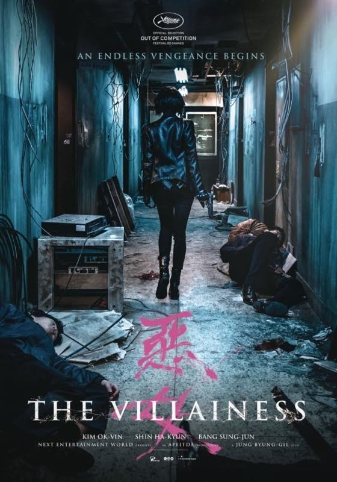

악녀:: The Villainess 2017
예고편 보고 영화관 가서 봐야지 맘 먹었다가 올라오는 후기에 짜게 식어서
결국 때를 놓치고 집에서 봤습니다 ^^
액션신은 정말 배우 고생 많이했다 란 생각이 드네요
스토리는 차라리 심플했음 좋았을걸 싶습니다
이야기가 촌스러워요........OTL
김옥빈 예쁘고
김서형 잘생겼다 ;ㅂ;
김옥빈 상대역 남자배우분 보는 내내 젝키의 장수원 닮았다는 생각을 했습니다 ㅋㅋ
찾아보니 성준 이란 배우군욤 ^^